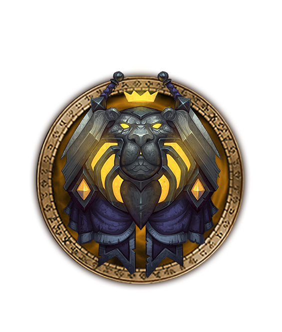

PALADIN



Paragons of Justice
This is the call of the paladin: to protect the weak, to bring justice to the unjust, and to vanquish evil from the darkest corners of the world. These holy warriors are equipped with plate armor so they can confront the toughest of foes, and the blessing of the Light allows them to heal wounds and, in some cases, even restore life to the dead.
Specializations
Protection
Retribution
Holy
Class Overview
Paladins stand directly in front of their enemies, relying on heavy armor and healing in order to survive incoming attacks. Whether with massive shields or crushing two-handed weapons, Paladins are able to keep claws and swords from their weaker fellows – or they use healing magic to ensure that they remain on their feet.